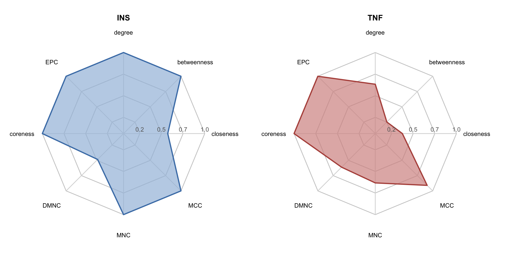
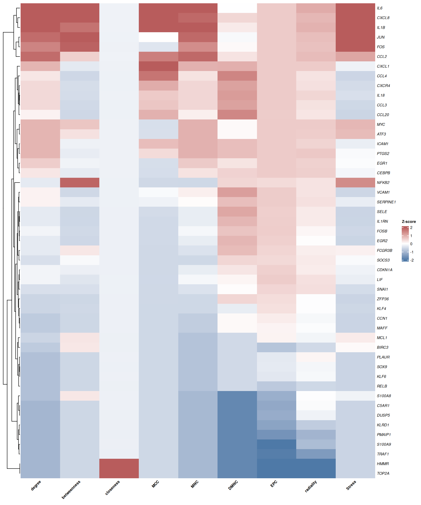
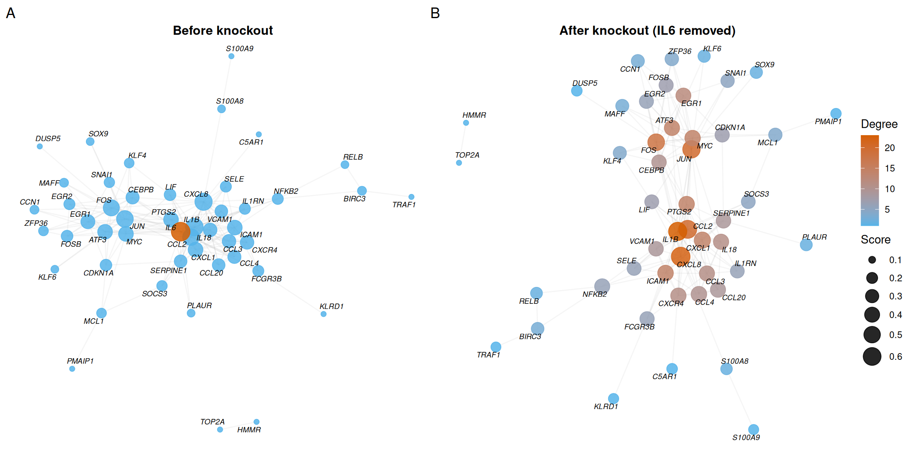
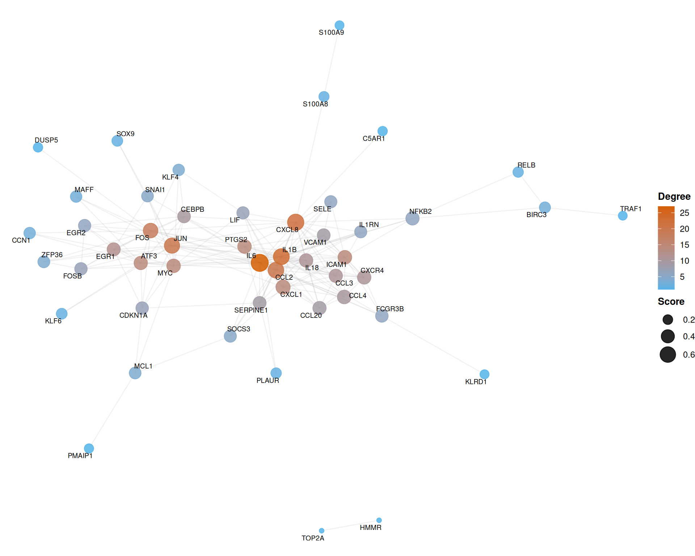
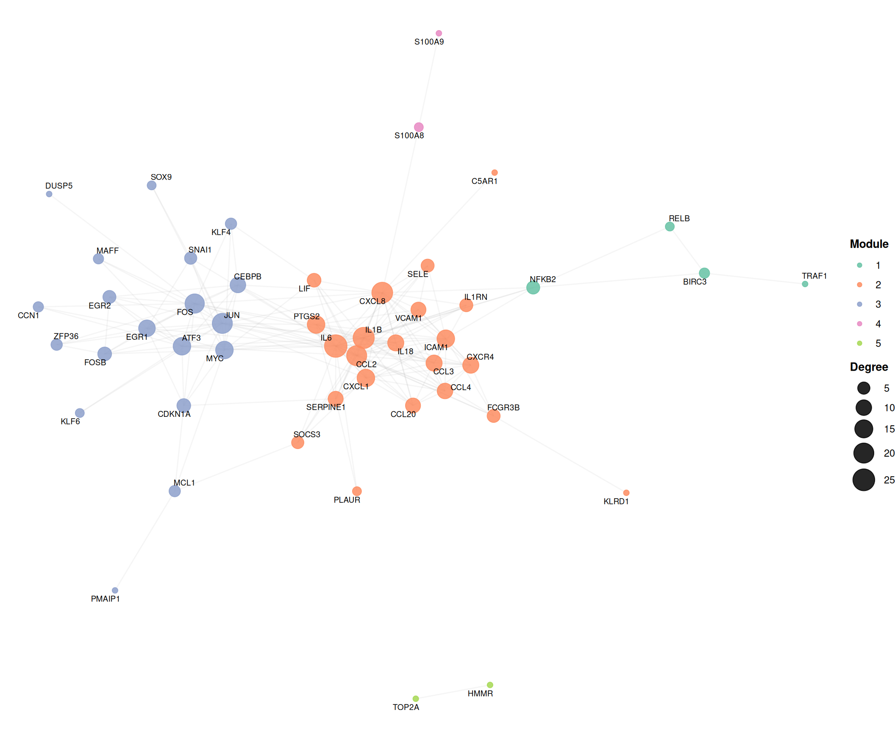
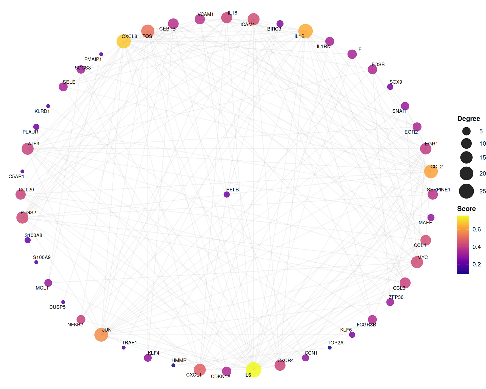
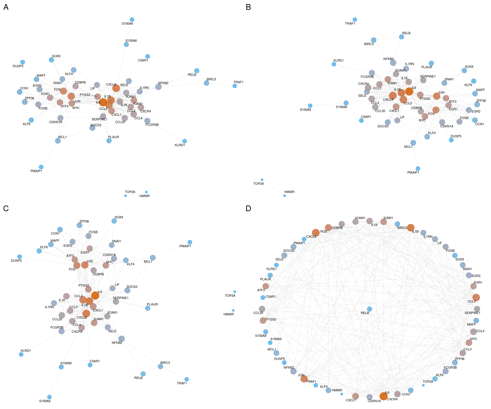

Chapter 7 PPI network analysis
Protein–protein interaction (PPI) networks are essential for deciphering the functional relationships among disease-related targets. TCMDATA provides a comprehensive PPI analysis pipeline that integrates data retrieval from STRING, network filtering, topological metric computation, community detection, and publication-ready visualization.
7.1 Retrieving PPI data from STRING
TCMDATA provides get_ppi() function, a thin wrapper around clusterProfiler::getPPI(), to retrieve Protein-Protein Interaction (PPI) information from the STRING database and return an igraph object containing known and predicted protein–protein interactions, with edge weights representing combined confidence scores (range 0–1).
User can retrieve PPI network for a given set of genes using get_ppi() by specifying the taxonomic ID (e.g., 9606 for human, 10090 for mouse):
In this example, we use a demo ppi from Diabetic Nephropathy (DN) gene set to illustrate the workflow:
#> IGRAPH 3f74811 UN-- 58 611 --
#> + attr: name (v/c), score (e/n)
#> + edges from 3f74811 (vertex names):
#> [1] SLC2A3 --SERPINE1 SLC2A3 --MYC RELB --CCL3 RELB --ATF3
#> [5] RELB --CXCR4 RELB --SELE RELB --KLF6 RELB --CXCL1
#> [9] RELB --CEBPB RELB --VCAM1 RELB --CCL20 RELB --FOS
#> [13] RELB --PTGS2 RELB --IL1RN RELB --MYC RELB --CCL2
#> [17] RELB --JUN RELB --CXCL8 RELB --ICAM1 RELB --TRAF1
#> [21] RELB --IL6 RELB --IL1B RELB --BIRC3 RELB --NFKB2
#> [25] SERPINE1--CCL4 SERPINE1--MCL1 SERPINE1--S100A8 SERPINE1--IL1RN
#> [29] SERPINE1--EGR1 SERPINE1--FOS SERPINE1--IL18 SERPINE1--CCL3
#> + ... omitted several edgesThe returned igraph object contains a score edge attribute representing STRING combined confidence scores, where higher values indicate stronger evidence for the interaction.
7.2 Network filtering
Raw PPI networks often contain low-confidence edges that introduce noise. ppi_subset() provides a two-stage filter:
- Edge score cutoff — removes edges below a confidence threshold.
- Top-n degree filter — retains only the n most connected nodes.
In this case, we keep edges with a STRING score ≥ 0.7 and then retain the top 100 nodes by degree:
ppi_filtered <- ppi_subset(ppi, score_cutoff = 0.7, n = 100)
cat("Before filtering:", vcount(ppi), "nodes,", ecount(ppi), "edges\n")#> Before filtering: 58 nodes, 611 edges#> After filtering: 49 nodes, 196 edges| Parameter | Description | Default |
|---|---|---|
score_cutoff |
Minimum edge confidence to retain | 0.7 |
n |
Top-n nodes by degree (NULL = all) | NULL |
rm_isolates |
Remove nodes with degree 0 after filtering | TRUE |
7.3 Target-set proximity to a disease PPI module
In addition to constructing a PPI network for a selected gene list, an important network pharmacology question is whether a target set is globally close to a disease module in the human PPI background. This is especially useful for comparing:
- Different herbs or formulas against the same disease.
- Formula designs before and after optimization.
- Candidate herb combinations, compound combinations, or target sets.
TCMDATA provides evaluate_tcm_target_sets_by_ppi() for this set-level analysis. Unlike rank_tcm_targets_by_ppi(), which ranks individual herb targets, this function evaluates the relationship between a target set H and a weighted disease module D.
The function reports five complementary network metrics:
| Metric | Meaning |
|---|---|
overlap_n |
Number of direct shared targets between H and D |
directlink_edges |
Number of one-step PPI links from non-overlap targets in H to disease targets in D |
jaccard |
Direct set similarity, |H ∩ D| / |H ∪ D| |
weighted_proximity |
Disease-weighted PPI proximity between H and D |
z_proximity |
Degree-matched random-background Z-score for the observed proximity |
The weighted proximity is calculated from shortest-path distances on the PPI network:
proximity(h, D) =
weighted.mean(1 / (1 + shortest_path_distance(h, d)),
disease_weight[d])
weighted_proximity(H, D) =
weighted.mean(proximity(h, D), target_weight[h])To control for the fact that high-degree proteins are naturally closer to many network modules, the function samples random target sets with matched degree bins and calculates:
z_proximity = (observed_proximity - mean(random_proximity)) /
sd(random_proximity)A positive z_proximity means that the target set is closer to the disease module than expected from same-degree random target sets.
7.3.1 Example: evaluating Lingzhi target set against DN
For the DN case study, we can combine GeneCards and Open Targets scores into a weighted disease module, then evaluate whether the Lingzhi target set is close to this DN module in the built-in human STRING PPI background:
library(TCMDATA)
## weighted DN disease module
data(dn_gcds_tbl)
data(dn_otp_tbl)
disease_w <- prepare_disease_weights(
GeneCards = dn_gcds_tbl,
OpenTargets = dn_otp_tbl
)
## Lingzhi target set
lingzhi_df <- search_herb("lingzhi", type = "Herb_pinyin_name")
lingzhi_w <- prepare_herb_target_weights(lingzhi_df, method = "binary")
## set-level PPI proximity evaluation
set_eval <- evaluate_tcm_target_sets_by_ppi(
target_sets = list(Lingzhi = lingzhi_w),
disease_targets = disease_w,
n_perm = 1000,
seed = 20260525
)
set_eval$result[, c(
"set", "n_targets_in_ppi", "overlap_n",
"overlap_target_fraction", "directlink_edges",
"first_order_target_coverage", "jaccard",
"weighted_proximity", "z_proximity", "p_empirical"
)]A simplified output may look like this:
set n_targets_in_ppi overlap_n overlap_target_fraction directlink_edges
Lingzhi 894 610 0.6823 3983
first_order_target_coverage jaccard weighted_proximity z_proximity p_empirical
0.9810 0.1058 0.2325 17.88 0.001This result would be interpreted as follows:
overlap_n = 610: many Lingzhi targets directly overlap with DN targets.first_order_target_coverage = 0.981: most Lingzhi targets either directly overlap with the DN module or are one PPI step away from it.jaccard = 0.1058: direct set similarity is modest because the DN disease module is large.z_proximity = 17.88: Lingzhi targets are much closer to the weighted DN module than degree-matched random target sets.
For comparing multiple candidate formulas or combinations, pass a named list:
multi_eval <- evaluate_tcm_target_sets_by_ppi(
target_sets = list(
formula_A = formula_A_targets,
formula_B = formula_B_targets,
optimized_formula = optimized_targets
),
disease_targets = disease_w,
n_perm = 1000
)
multi_eval$result[order(multi_eval$result$Rank_set), ]In multi-set analysis, Rank_set ranks target sets by Score_set, which is currently equal to z_proximity. In single-set analysis, Rank_set is always 1 and should not be overinterpreted; the key statistics are z_proximity, p_empirical, overlap_n, and first_order_target_coverage.
7.4 Topological metrics
Topological analysis of PPI networks is fundamental for identifying disease-critical nodes. By quantifying centrality metrics such as degree, betweenness, and closeness, researchers can pinpoint hub proteins that serve as key regulators, bottleneck nodes that control information flow, and bridge proteins that connect functional modules. These topologically important nodes often represent promising therapeutic targets.
Traditionally, most network pharmacology studies rely on Cytoscape, which is a widely adopted desktop application, and its CytoHubba plugin[1] to compute centrality metrics for target prioritization. While effective, this workflow requires exporting data from other software, manual operation in a GUI environment, and re-importing results, which disrupts the analytical pipeline and reduces reproducibility.
TCMDATA addresses these limitations with compute_nodeinfo(), which calculates a comprehensive set of centrality measures directly within the R ecosystem. This approach offers two key advantages:
- Workflow integration — All analyses remain in R, eliminating context-switching and ensuring full reproducibility through scripted pipelines.
- Extended metric coverage — Beyond the 11 metrics provided by CytoHubba,
compute_nodeinfo()includes additional measures, enabling more comprehensive topological characterization.
In this example, we calculate a panel of 19 topological metrics for the filtered PPI network, using the score edge attribute as weights where applicable:
#> | | | 0% | | | 1% | |= | 1% | |= | 2% | |== | 2% | |== | 3% | |== | 4% | |=== | 4% | |=== | 5% | |==== | 5% | |==== | 6% | |===== | 6% | |===== | 7% | |===== | 8% | |====== | 8% | |====== | 9% | |======= | 9% | |======= | 10% | |======= | 11% | |======== | 11% | |======== | 12% | |========= | 12% | |========= | 13% | |========= | 14% | |========== | 14% | |========== | 15% | |=========== | 15% | |=========== | 16% | |============ | 16% | |============ | 17% | |============ | 18% | |============= | 18% | |============= | 19% | |============== | 19% | |============== | 20% | |============== | 21% | |=============== | 21% | |=============== | 22% | |================ | 22% | |================ | 23% | |================ | 24% | |================= | 24% | |================= | 25% | |================== | 25% | |================== | 26% | |=================== | 26% | |=================== | 27% | |=================== | 28% | |==================== | 28% | |==================== | 29% | |===================== | 29% | |===================== | 30% | |===================== | 31% | |====================== | 31% | |====================== | 32% | |======================= | 32% | |======================= | 33% | |======================= | 34% | |======================== | 34% | |======================== | 35% | |========================= | 35% | |========================= | 36% | |========================== | 36% | |========================== | 37% | |========================== | 38% | |=========================== | 38% | |=========================== | 39% | |============================ | 39% | |============================ | 40% | |============================ | 41% | |============================= | 41% | |============================= | 42% | |============================== | 42% | |============================== | 43% | |============================== | 44% | |=============================== | 44% | |=============================== | 45% | |================================ | 45% | |================================ | 46% | |================================= | 46% | |================================= | 47% | |================================= | 48% | |================================== | 48% | |================================== | 49% | |=================================== | 49% | |=================================== | 50% | |=================================== | 51% | |==================================== | 51% | |==================================== | 52% | |===================================== | 52% | |===================================== | 53% | |===================================== | 54% | |====================================== | 54% | |====================================== | 55% | |======================================= | 55% | |======================================= | 56% | |======================================== | 56% | |======================================== | 57% | |======================================== | 58% | |========================================= | 58% | |========================================= | 59% | |========================================== | 59% | |========================================== | 60% | |========================================== | 61% | |=========================================== | 61% | |=========================================== | 62% | |============================================ | 62% | |============================================ | 63% | |============================================ | 64% | |============================================= | 64% | |============================================= | 65% | |============================================== | 65% | |============================================== | 66% | |=============================================== | 66% | |=============================================== | 67% | |=============================================== | 68% | |================================================ | 68% | |================================================ | 69% | |================================================= | 69% | |================================================= | 70% | |================================================= | 71% | |================================================== | 71% | |================================================== | 72% | |=================================================== | 72% | |=================================================== | 73% | |=================================================== | 74% | |==================================================== | 74% | |==================================================== | 75% | |===================================================== | 75% | |===================================================== | 76% | |====================================================== | 76% | |====================================================== | 77% | |====================================================== | 78% | |======================================================= | 78% | |======================================================= | 79% | |======================================================== | 79% | |======================================================== | 80% | |======================================================== | 81% | |========================================================= | 81% | |========================================================= | 82% | |========================================================== | 82% | |========================================================== | 83% | |========================================================== | 84% | |=========================================================== | 84% | |=========================================================== | 85% | |============================================================ | 85% | |============================================================ | 86% | |============================================================= | 86% | |============================================================= | 87% | |============================================================= | 88% | |============================================================== | 88% | |============================================================== | 89% | |=============================================================== | 89% | |=============================================================== | 90% | |=============================================================== | 91% | |================================================================ | 91% | |================================================================ | 92% | |================================================================= | 92% | |================================================================= | 93% | |================================================================= | 94% | |================================================================== | 94% | |================================================================== | 95% | |=================================================================== | 95% | |=================================================================== | 96% | |==================================================================== | 96% | |==================================================================== | 97% | |==================================================================== | 98% | |===================================================================== | 98% | |===================================================================== | 99% | |======================================================================| 99% | |======================================================================| 100%#> Class 'igraph' hidden list of 10
#> $ : num 49
#> $ : logi FALSE
#> $ : num [1:196] 11 31 37 14 17 12 10 26 38 2 ...
#> $ : num [1:196] 0 0 1 1 1 1 1 1 1 1 ...
#> $ : NULL
#> $ : NULL
#> $ : NULL
#> $ : NULL
#> $ :List of 4
#> ..$ : num [1:3] 1 0 1
#> ..$ : Named list()
#> ..$ :List of 20
#> .. ..$ name : chr [1:49] "RELB" "SERPINE1" "CCL2" "EGR1" ...
#> .. ..$ degree : num [1:49] 2 9 20 12 6 5 2 7 7 6 ...
#> .. ..$ strength : num [1:49] 1.72 7.22 17.41 10.35 5.46 ...
#> .. ..$ betweenness : num [1:49] 0 14.513 59.5 20.977 0.167 ...
#> .. ..$ betweenness_w : num [1:49] 0 8 16 7 0 0 0 0 19 0 ...
#> .. ..$ closeness : num [1:49] 0.00694 0.0101 0.01282 0.01111 0.00862 ...
#> .. ..$ closeness_w : num [1:49] 0.00608 0.00859 0.01112 0.00959 0.0078 ...
#> .. ..$ eigen_centrality: num [1:49] 0.0198 0.3747 0.8258 0.3252 0.196 ...
#> .. ..$ pagerank : num [1:49] 0.0105 0.0198 0.0416 0.0287 0.0158 ...
#> .. ..$ coreness : num [1:49] 2 7 8 6 6 4 2 6 6 6 ...
#> .. ..$ clustering_coef : num [1:49] 1 0.611 0.453 0.545 0.933 ...
#> .. ..$ eccentricity : num [1:49] 5 4 4 4 5 4 5 5 4 4 ...
#> .. ..$ is_articulation : logi [1:49] FALSE FALSE FALSE FALSE FALSE FALSE ...
#> .. ..$ MCC : num [1:49] 2 5043 28584 1254 240 ...
#> .. ..$ MNC : num [1:49] 2 8 20 12 6 5 2 7 7 6 ...
#> .. ..$ DMNC : num [1:49] 0.308 0.641 0.528 0.527 0.666 ...
#> .. ..$ BN : num [1:49] 0 2 22 4 0 1 0 0 1 0 ...
#> .. ..$ radiality : num [1:49] 3.71 4.65 5.08 4.83 4.29 ...
#> .. ..$ Stress : num [1:49] 0 88 418 139 1 26 0 10 90 1 ...
#> .. ..$ EPC : num [1:49] 25.7 40.4 40.6 40.5 39.9 ...
#> ..$ :List of 1
#> .. ..$ score: num [1:196] 0.717 0.999 0.701 0.719 0.736 0.742 0.746 0.815 0.849 0.918 ...
#> $ :<environment: 0x55f49c594a48>The following metrics are computed and stored as vertex attributes:
| Category | Metric | Description |
|---|---|---|
| Local | degree |
Number of direct neighbors |
strength |
Sum of incident edge weights | |
clustering_coef |
Local clustering coefficient (transitivity) | |
coreness |
k-core decomposition level | |
| Global | betweenness |
Fraction of all-pairs shortest paths passing through the node |
closeness |
Inverse of average shortest-path distance to all other nodes | |
eccentricity |
Maximum shortest-path distance to any reachable node | |
eigen_centrality |
Influence score based on connections to high-scoring neighbors | |
pagerank |
Importance based on random-walk visitation probability | |
| CytoHubba[1] | MCC |
Maximal Clique Centrality — sum of ( |
MNC |
Maximum Neighborhood Component — size of the largest connected component among neighbors | |
DMNC |
Density of MNC — edge density of the MNC, penalized by component size (α = 1.7) | |
BN |
BottleNeck — frequency of being a high-flow node in shortest-path trees | |
EPC |
Edge Percolated Component — average component size under random edge removal | |
radiality |
Radiality — average gain in reachability relative to graph diameter | |
Stress |
Stress centrality — total count of shortest paths passing through the node |
7.4.1 Integrated ranking
rank_ppi_nodes() normalizes all selected metrics to [0, 1], applies user-defined weights (equal by default), and produces a composite score for target prioritization:
rank_res <- rank_ppi_nodes(ppi_scored, use_weight = TRUE)
# Extract ranked table
ppi_ranked <- rank_res$graph
rank_df <- rank_res$table
rank_df[1:10, c("name", "degree", "betweenness_w", "closeness_w",
"MCC", "MNC", "EPC", "Score_network", "Rank_network")]#> name degree betweenness_w closeness_w MCC MNC EPC Score_network
#> 39 IL6 27 301 0.012828644 46520 27 40.575 0.7557900
#> 18 CXCL8 22 219 0.011826965 45146 20 40.575 0.6728551
#> 11 IL1B 23 81 0.012135064 45534 23 40.575 0.6323832
#> 3 CCL2 20 16 0.011115212 28584 20 40.575 0.6141793
#> 33 JUN 20 246 0.011534103 7618 20 40.575 0.5719901
#> 17 FOS 18 135 0.010750677 2563 17 40.575 0.5170816
#> 37 CXCL1 14 0 0.010180263 37584 14 40.575 0.4801195
#> 48 CCL4 10 0 0.008875304 30240 10 40.575 0.4380035
#> 13 ICAM1 14 12 0.009497345 18144 14 40.575 0.4376745
#> 27 PTGS2 14 0 0.010199193 13320 14 40.575 0.4308640
#> Rank_network
#> 39 1
#> 18 2
#> 11 3
#> 3 4
#> 33 5
#> 17 6
#> 37 7
#> 48 8
#> 13 9
#> 27 107.4.2 Radar plot of topological metrics
For a target of interest, get_node_profile() + radar_plot() produces a radar chart showing its normalized centrality fingerprint across multiple dimensions:
library(aplot)
# Pick the top 2 ranked nodes
top_nodes <- rank_df$name[1:2]
p_radar1 <- radar_plot(
get_node_profile(rank_df, top_nodes[1]),
fill_color = "#A3BEDD", line_color = "#4A7FB5",
title = top_nodes[1]
)
p_radar2 <- radar_plot(
get_node_profile(rank_df, top_nodes[2]),
fill_color = "#D59390", line_color = "#B5524A",
title = top_nodes[2]
)
plot_list(p_radar1, p_radar2, ncol = 2)
7.4.3 Heatmap of topological metrics
The heatmap provides a global overview of selected nodes across multiple topological metrics simultaneously. plot_node_heatmap() generates a Z-score normalized heatmap using ComplexHeatmap, with hierarchical clustering to reveal nodes with similar centrality profiles:
# Select key metrics for visualization
selected_cols <- c("degree", "betweenness", "closeness", "MCC", "MNC",
"DMNC", "EPC", "radiality", "Stress")
plot_node_heatmap(rank_df, select_cols = selected_cols)
7.5 Community detection
Identifying densely connected subnetworks (modules) helps reveal functional protein complexes and signaling cascades. TCMDATA supports four complementary algorithms.
7.5.1 Louvain modularity optimization
The Louvain algorithm[3] is a fast and scalable community detection method that optimizes network modularity through a hierarchical, greedy approach. It iteratively assigns nodes to communities that maximize the modularity gain, then aggregates communities into super-nodes and repeats the process. Due to its computational efficiency and ability to handle large-scale networks, Louvain has become one of the most popular algorithms for detecting functional modules in biological networks.
ppi_louvain <- run_louvain(ppi_scored, resolution = 1.0)
louvain_scores <- add_cluster_score(ppi_louvain, cluster_attr = "louvain_cluster", min_size = 3)
head(louvain_scores)#> Cluster_ID Score Nodes Edges Density Gene_List
#> 1 2 9.810 22 103 0.446 SERPINE1, CCL2, LIF, IL1RN, IL1B
#> 2 3 6.111 19 55 0.322 EGR1, EGR2, SNAI1, SOX9, FOSB
#> 3 1 2.667 4 4 0.667 RELB, BIRC3, NFKB2, TRAF1
#> Full_Genes
#> 1 SERPINE1,CCL2,LIF,IL1RN,IL1B,ICAM1,IL18,VCAM1,CXCL8,SOCS3,SELE,KLRD1,PLAUR,C5AR1,CCL20,PTGS2,CXCL1,IL6,CXCR4,FCGR3B,CCL3,CCL4
#> 2 EGR1,EGR2,SNAI1,SOX9,FOSB,CEBPB,FOS,PMAIP1,ATF3,MCL1,DUSP5,JUN,KLF4,CDKN1A,CCN1,KLF6,ZFP36,MYC,MAFF
#> 3 RELB,BIRC3,NFKB2,TRAF1The resolution parameter controls clustering granularity: values > 1 produce more, smaller clusters; values < 1 yield fewer, larger clusters.
7.5.2 MCODE (Molecular Complex Detection)
MCODE (Molecular Complex Detection)[2] is a classic graph-clustering algorithm specifically designed for identifying densely connected regions in PPI networks. Originally implemented as a Cytoscape plugin, MCODE has become one of the most widely adopted methods for detecting protein complexes and functional modules in network pharmacology studies.
The algorithm operates in three phases: (1) vertex weighting based on local neighborhood density (k-core × density), (2) seeded growth from high-scoring seed nodes, and (3) post-processing via haircut (removing singly-connected peripheral nodes) or fluff (expanding with dense neighbors).
TCMDATA provides run_mcode(), a native R implementation of the MCODE algorithm, enabling seamless integration into scripted workflows without requiring external software. This eliminates the need to export networks to Cytoscape and manually run the plugin, significantly improving reproducibility and efficiency in PPI analysis pipelines.
ppi_mcode <- run_mcode(ppi_scored, vwp = 0.2, haircut = TRUE, fluff = FALSE)
mcode_res <- get_mcode_res(ppi_mcode, only_clusters = TRUE)
head(mcode_res)#> name mcode_score cluster module_score is_seed
#> 1 IL18 6.236364 Module_1 8.6 FALSE
#> 2 CCL3 6.236364 Module_1 8.6 FALSE
#> 3 SERPINE1 7.000000 Module_1 8.6 FALSE
#> 4 VCAM1 7.000000 Module_1 8.6 FALSE
#> 5 IL1B 7.151515 Module_1 8.6 FALSE
#> 6 CXCL8 7.151515 Module_1 8.6 FALSE7.5.3 MCL (Markov Clustering)
The Markov Clustering (MCL) algorithm[4] detects community structure by simulating stochastic flow (random walks) on the network. It alternates between two operations: expansion (matrix squaring to allow flow to spread) and inflation (element-wise exponentiation to strengthen strong connections and weaken weak ones). This process naturally separates the network into well-defined clusters based on flow patterns. MCL is particularly effective for PPI networks because protein complexes tend to form densely connected regions that trap random walks.
ppi_mcl <- run_MCL(ppi_scored, inflation = 2.5)
mcl_scores <- add_cluster_score(ppi_mcl, cluster_attr = "MCL_cluster", min_size = 3)
head(mcl_scores)#> Cluster_ID Score Nodes Edges Density Gene_List
#> 1 7 10.211 20 97 0.511 SERPINE1, CCL2, LIF, IL1RN, IL1B
#> 2 2 5.000 11 25 0.455 EGR1, EGR2, FOSB, CEBPB, FOS
#> 3 5 3.200 6 8 0.533 SNAI1, SOX9, ATF3, JUN, KLF6
#> 4 1 2.667 4 4 0.667 RELB, BIRC3, NFKB2, TRAF1
#> Full_Genes
#> 1 SERPINE1,CCL2,LIF,IL1RN,IL1B,ICAM1,IL18,VCAM1,CXCL8,SOCS3,SELE,PLAUR,C5AR1,CCL20,PTGS2,CXCL1,IL6,CXCR4,CCL3,CCL4
#> 2 EGR1,EGR2,FOSB,CEBPB,FOS,DUSP5,KLF4,CDKN1A,CCN1,ZFP36,MYC
#> 3 SNAI1,SOX9,ATF3,JUN,KLF6,MAFF
#> 4 RELB,BIRC3,NFKB2,TRAF1The inflation parameter controls cluster granularity: higher values (e.g., 3–5) yield tighter, more granular clusters; lower values (e.g., 1.5–2) produce larger, more inclusive modules.
7.5.4 Fast greedy modularity optimization
The fast greedy algorithm[5] detects communities by greedily optimizing network modularity. It starts with each node as an individual community, then repeatedly merges the pair of communities that produces the largest modularity gain. This bottom-up strategy is efficient for undirected networks and provides a simple modularity-based alternative to Louvain for PPI module detection.
TCMDATA implements this workflow through run_fastgreedy(), which calls igraph::cluster_fast_greedy() and writes the resulting membership labels back to the graph as fastgreedy_cluster. By default, the function uses the edge attribute weight as the confidence score; if weight is absent, it falls back to the STRING-style score attribute. Users can also provide a custom weight vector or set weights = NA for unweighted clustering.
ppi_fastgreedy <- run_fastgreedy(ppi_scored)
fastgreedy_scores <- add_cluster_score(
ppi_fastgreedy,
cluster_attr = "fastgreedy_cluster",
min_size = 3
)
head(fastgreedy_scores)#> Cluster_ID Score Nodes Edges Density Gene_List
#> 1 2 9.810 22 103 0.446 SERPINE1, CCL2, LIF, IL1RN, IL1B
#> 2 1 6.111 19 55 0.322 EGR1, EGR2, SNAI1, SOX9, FOSB
#> 3 4 2.667 4 4 0.667 RELB, BIRC3, NFKB2, TRAF1
#> Full_Genes
#> 1 SERPINE1,CCL2,LIF,IL1RN,IL1B,ICAM1,IL18,VCAM1,CXCL8,SOCS3,SELE,KLRD1,PLAUR,C5AR1,CCL20,PTGS2,CXCL1,IL6,CXCR4,FCGR3B,CCL3,CCL4
#> 2 EGR1,EGR2,SNAI1,SOX9,FOSB,CEBPB,FOS,PMAIP1,ATF3,MCL1,DUSP5,JUN,KLF4,CDKN1A,CCN1,KLF6,ZFP36,MYC,MAFF
#> 3 RELB,BIRC3,NFKB2,TRAF1The weights parameter controls whether PPI confidence scores contribute to modularity optimization. For example, weights = "score" explicitly uses the score edge attribute, while weights = NA performs unweighted fast greedy clustering.
7.6 PPI network robustness analysis
Assessing the robustness of PPI networks to node perturbation is crucial for understanding the resilience of biological systems and identifying critical vulnerabilities. The ppi_knock() function simulates targeted node removal (knockout) and evaluates the impact on network integrity by comparing against randomized null models, following the drug attack model proposed by Xi et al. (2022)[6].
7.6.1 Algorithm overview
The algorithm tracks four network-level topological metrics — ASPL (Average Shortest Path Length), AD (Average Degree), DC (Degree Centralization), and CC (Closeness Centrality) — and proceeds in four stages:
- Baseline: Compute the four metrics on the intact network.
- Real attack: Remove the target nodes and re-compute metrics. The Robustness Index (RI) quantifies relative change: \(RI = (M_{after} - M_{before}) / M_{before}\).
- Permutation null: Rewire the network \(n\) times (preserving degree sequence), shuffle edge weights, randomly knock out the same number of nodes, and compute the random RI distribution.
- Z-score normalization: \(Z = (RI_{real} - \mu_{null}) / \sigma_{null}\), with p-values derived via normal approximation: \(p = 2\Phi(-|Z|)\).
The Total Score integrates all metrics: \(Total = Z_{ASPL} - Z_{AD} - Z_{DC} - Z_{CC}\). A large positive value indicates the knocked-out targets are structurally critical. The Total P-value is derived by comparing the real combined RI against the permutation null distribution of combined RIs.
7.6.2 Example: knocking out IL6
#> Metric Baseline Post_KO Raw_RI Mu_Random Sd_Random Normalized_RI
#> 1 ASPL 2.7306271 2.8533420 0.04494018 0.001669616 0.010447079 4.141881
#> 2 AD 8.0000000 7.0416667 -0.11979167 -0.022552083 0.038223524 -2.543972
#> 3 DC 0.3958333 0.3182624 -0.19596865 -0.012564390 0.046719451 -3.925651
#> 4 CC 0.4673347 0.4485911 -0.04010743 -0.001194393 0.009824485 -3.960822
#> Pvalue
#> 1 3.444689e-05
#> 2 1.095998e-02
#> 3 8.649551e-05
#> 4 7.469231e-05#> Total Score: 14.57233#> Total P-value: 5.273783e-05The results show that removing IL6 causes ASPL to increase (network paths become longer) while AD, DC, and CC decrease (connectivity drops), all deviating significantly from the random null (|Z| > 1.96, p < 0.05 for all metrics). The high Total Score (with a highly significant p-value) confirms IL6 as a structurally critical hub in this PPI network.
7.6.3 Visualization: before vs. after knockout
To visually compare network topology before and after knockout, we plot the intact network (with the target highlighted in red) alongside the post-knockout network:
library(ggtangle)
library(igraph)
library(ggplot2)
library(ggrepel)
library(aplot)
target_node <- "IL6"
## prepare before / after igraph objects
g_before <- ppi_ranked
V(g_before)$is_target <- ifelse(V(g_before)$name == target_node, "Target", "Other")
g_after <- delete_vertices(g_before, target_node)
## network before knockout
set.seed(2025)
p_before <- ggplot(g_before, layout = "fr") +
geom_edge(alpha = 0.10, color = "grey65") +
geom_point(aes(color = is_target, size = degree), alpha = 0.85) +
geom_text_repel(aes(label = name), size = 2.5, max.overlaps = 25,
segment.alpha = 0.3, fontface = "italic") +
scale_color_manual(values = c(Other = "#56B4E9", Target = "#D55E00"),
guide = "none") +
scale_size_continuous(range = c(2, 8), guide = "none") +
ggtitle("Before knockout") +
theme_void() +
theme(plot.title = element_text(hjust = 0.5, face = "bold", size = 12))
## network after knockout
set.seed(2025)
p_after <- ggplot(g_after, layout = "fr") +
geom_edge(alpha = 0.10, color = "grey65") +
geom_point(aes(color = degree, size = Score_network), alpha = 0.85) +
geom_text_repel(aes(label = name), size = 2.5, max.overlaps = 25,
segment.alpha = 0.3, fontface = "italic") +
scale_color_gradient(low = "#56B4E9", high = "#D55E00", name = "Degree") +
scale_size_continuous(range = c(2, 8), name = "Score") +
ggtitle(paste0("After knockout (", target_node, " removed)")) +
theme_void() +
theme(plot.title = element_text(hjust = 0.5, face = "bold", size = 12))
plot_list(p_before, p_after, ncol = 2, labels = c("A", "B"))
- Panel A shows the intact network with IL6 highlighted in red, revealing its central position and high degree.
- Panel B shows the network after removing IL6 — the loss of its connections visibly fragments local connectivity.
7.7 PPI network visualization
High-quality network visualization is essential for interpreting PPI analysis results and preparing publication-ready figures. While Cytoscape remains a popular choice for network visualization, it requires manual GUI operations that are difficult to reproduce and integrate into automated workflows.
ggtangle[7] addresses these limitations by providing a ggplot2-native framework for network rendering. Key advantages include:
- Full
ggplot2compatibility — Seamless integration with the grammar of graphics; supports allggplot2themes, scales, and annotations. - Reproducibility — All visualizations are generated programmatically, ensuring consistent results across runs.
- Publication-ready output — Fine-grained control over node aesthetics, edge styling, and layout algorithms for SCI-standard figures.
- Direct
igraphsupport — Acceptsigraphobjects directly without format conversion.
7.7.1 Basic network with topological mapping
The following example maps node degree to color and composite score to size, using the Fruchterman-Reingold force-directed layout:
library(ggtangle)
library(ggplot2)
library(ggrepel)
set.seed(2025)
ggplot(ppi_ranked, layout = "fr") +
geom_edge(alpha = 0.12, color = "grey60") +
geom_point(aes(color = degree, size = Score_network), alpha = 0.85) +
geom_text_repel(aes(label = name), size = 2.5, max.overlaps = 30, segment.alpha = 0.3) +
scale_color_gradient(low = "#56B4E9", high = "#D55E00", name = "Degree") +
scale_size_continuous(range = c(2, 8), name = "Score") +
theme_void() +
theme(
legend.position = "right",
legend.title = element_text(face = "bold", size = 10)
)
7.7.2 Community-colored network
Overlaying cluster assignments reveals modular organization. Hub nodes (top 15% by degree) are labeled using ggrepel to avoid text overlap:
library(ggrepel)
set.seed(2025)
ggplot(ppi_louvain, layout = "fr") +
geom_edge(alpha = 0.10, color = "grey65") +
geom_point(aes(color = louvain_cluster, size = degree), alpha = 0.85) +
geom_text_repel(aes(label = name), size = 2.5, max.overlaps = 30, segment.alpha = 0.3) +
scale_color_brewer(palette = "Set2", name = "Module") +
scale_size_continuous(range = c(2, 9), name = "Degree") +
theme_void() +
theme(
legend.position = "right",
legend.title = element_text(face = "bold", size = 10)
)
7.7.3 Hub-centric star layout
The star layout positions the highest-degree node at the center, emphasizing hub–spoke relationships:
set.seed(2025)
ggplot(ppi_ranked, layout = "star") +
geom_edge(alpha = 0.12, color = "grey60") +
geom_point(aes(color = Score_network, size = degree), alpha = 0.85) +
geom_text_repel(aes(label = name), size = 2.5, max.overlaps = 30, segment.alpha = 0.3) +
scale_color_viridis_c(option = "C", name = "Score") +
scale_size_continuous(range = c(2, 10), name = "Degree") +
theme_void() +
theme(
legend.position = "right",
legend.title = element_text(face = "bold", size = 10)
)
7.7.4 Layout algorithm comparison
Different layouts suit different analytical purposes. The following comparison illustrates four common algorithms:
library(aplot)
set.seed(2025)
base_layers <- list(
geom_edge(alpha = 0.10, color = "grey65"),
geom_point(aes(color = degree, size = Score_network), alpha = 0.85),
geom_text_repel(aes(label = name), size = 2, max.overlaps = 25, segment.alpha = 0.3),
scale_color_gradient(low = "#56B4E9", high = "#D55E00", guide = "none"),
scale_size_continuous(range = c(1.5, 6), guide = "none"),
theme_void()
)
p_fr <- ggplot(ppi_ranked, layout = "fr") + base_layers
p_kk <- ggplot(ppi_ranked, layout = "kk") + base_layers
p_nicely <- ggplot(ppi_ranked, layout = "nicely") + base_layers
p_star <- ggplot(ppi_ranked, layout = "star") + base_layers
plot_list(p_fr, p_kk, p_nicely, p_star, ncol = 2, labels = c("A", "B", "C", "D"))
| Panel | Layout | Description | Best for |
|---|---|---|---|
| A | Fruchterman-Reingold | Force-directed; minimizes edge crossings | Dense networks with many edges |
| B | Kamada-Kawai | Energy-based; preserves graph distances | Medium networks with clear clusters |
| C | Nicely | Automatic selection by igraph |
General-purpose visualization |
| D | Star | Hub at center, others radially arranged | Hub-centric topology analysis |
7.8 References
Chin CH, Chen SH, Wu HH, Ho CW, Ko MT, Lin CY. cytoHubba: identifying hub objects and sub-networks from complex interactome. BMC Systems Biology (2014), 8(Suppl 4), S11. doi: 10.1186/1752-0509-8-S4-S11.
Bader GD, Hogue CW. An automated method for finding molecular complexes in large protein interaction networks. BMC Bioinformatics (2003), 4, 2. doi: 10.1186/1471-2105-4-2.
Blondel VD, Guillaume JL, Lambiotte R, Lefebvre E. Fast unfolding of communities in large networks. Journal of Statistical Mechanics: Theory and Experiment (2008), 2008(10), P10008. doi: 10.1088/1742-5468/2008/10/P10008.
van Dongen S. Graph clustering via a discrete uncoupling process. SIAM Journal on Matrix Analysis and Applications (2008), 30(1), 121–141. doi: 10.1137/040608635.
Clauset A, Newman MEJ, Moore C. Finding community structure in very large networks. Physical Review E (2004), 70(6), 066111. doi: 10.1103/PhysRevE.70.066111.
Xi Y, et al. Exploration of the Specific Pathology of HXMM Tablet Against Retinal Injury Based on Drug Attack Model to Network Robustness. Frontiers in Pharmacology (2022), 13, 826535. doi: 10.3389/fphar.2022.826535.
Yu G. ggtangle: Draw Network and Phylogenetic Tree Using Grammar of Graphics. R package. doi: 10.32614/CRAN.package.ggtangle.
7.9 Session information
#> R version 4.6.0 (2026-04-24)
#> Platform: x86_64-pc-linux-gnu
#> Running under: Ubuntu 24.04.4 LTS
#>
#> Matrix products: default
#> BLAS: /usr/lib/x86_64-linux-gnu/openblas-pthread/libblas.so.3
#> LAPACK: /usr/lib/x86_64-linux-gnu/openblas-pthread/libopenblasp-r0.3.26.so; LAPACK version 3.12.0
#>
#> locale:
#> [1] LC_CTYPE=en_US.UTF-8 LC_NUMERIC=C
#> [3] LC_TIME=en_US.UTF-8 LC_COLLATE=en_US.UTF-8
#> [5] LC_MONETARY=en_US.UTF-8 LC_MESSAGES=en_US.UTF-8
#> [7] LC_PAPER=en_US.UTF-8 LC_NAME=C
#> [9] LC_ADDRESS=C LC_TELEPHONE=C
#> [11] LC_MEASUREMENT=en_US.UTF-8 LC_IDENTIFICATION=C
#>
#> time zone: UTC
#> tzcode source: system (glibc)
#>
#> attached base packages:
#> [1] stats4 stats graphics grDevices utils datasets methods
#> [8] base
#>
#> other attached packages:
#> [1] org.Hs.eg.db_3.23.1 AnnotationDbi_1.74.0 IRanges_2.46.0
#> [4] S4Vectors_0.50.1 Biobase_2.72.0 BiocGenerics_0.58.1
#> [7] generics_0.1.4 clusterProfiler_4.20.0 aplot_0.2.9
#> [10] ggrepel_0.9.8 ggtangle_0.1.2 igraph_2.3.1
#> [13] ggplot2_4.0.3 dplyr_1.2.1 ivolcano_0.0.5
#> [16] enrichplot_1.32.0 TCMDATA_0.1.0
#>
#> loaded via a namespace (and not attached):
#> [1] RColorBrewer_1.1-3 rstudioapi_0.18.0 jsonlite_2.0.0
#> [4] shape_1.4.6.1 tidydr_0.0.6 magrittr_2.0.5
#> [7] farver_2.1.2 rmarkdown_2.31 GlobalOptions_0.1.4
#> [10] fs_2.1.0 vctrs_0.7.3 memoise_2.0.1
#> [13] ggtree_4.2.0 htmltools_0.5.9 gridGraphics_0.5-1
#> [16] sass_0.4.10 bslib_0.11.0 htmlwidgets_1.6.4
#> [19] plyr_1.8.9 httr2_1.2.2 cachem_1.1.0
#> [22] lifecycle_1.0.5 iterators_1.0.14 pkgconfig_2.0.3
#> [25] Matrix_1.7-5 R6_2.6.1 fastmap_1.2.0
#> [28] gson_0.1.0 clue_0.3-68 digest_0.6.39
#> [31] colorspace_2.1-2 ggnewscale_0.5.2 patchwork_1.3.2
#> [34] aisdk_1.4.8 ps_1.9.3 RSQLite_3.53.1
#> [37] labeling_0.4.3 httr_1.4.8 polyclip_1.10-7
#> [40] compiler_4.6.0 bit64_4.8.2 fontquiver_0.2.1
#> [43] withr_3.0.2 doParallel_1.0.17 S7_0.2.2
#> [46] DBI_1.3.0 ggforce_0.5.0 MASS_7.3-65
#> [49] rappdirs_0.3.4 rjson_0.2.23 tools_4.6.0
#> [52] ape_5.8-1 scatterpie_0.2.6 glue_1.8.1
#> [55] callr_3.7.6 nlme_3.1-169 GOSemSim_2.38.0
#> [58] grid_4.6.0 ggvenn_0.1.19 cluster_2.1.8.2
#> [61] reshape2_1.4.5 gtable_0.3.6 tidyr_1.3.2
#> [64] XVector_0.52.0 foreach_1.5.2 pillar_1.11.1
#> [67] stringr_1.6.0 yulab.utils_0.2.4 circlize_0.4.18
#> [70] splines_4.6.0 tweenr_2.0.3 treeio_1.36.1
#> [73] lattice_0.22-9 bit_4.6.0 tidyselect_1.2.1
#> [76] fontLiberation_0.1.0 GO.db_3.23.1 ComplexHeatmap_2.28.0
#> [79] Biostrings_2.80.1 knitr_1.51 fontBitstreamVera_0.1.1
#> [82] gridExtra_2.3 bookdown_0.46 Seqinfo_1.2.0
#> [85] xfun_0.57 matrixStats_1.5.0 stringi_1.8.7
#> [88] lazyeval_0.2.3 ggfun_0.2.0 yaml_2.3.12
#> [91] evaluate_1.0.5 codetools_0.2-20 gdtools_0.5.1
#> [94] tibble_3.3.1 qvalue_2.44.0 ggplotify_0.1.3
#> [97] cli_3.6.6 systemfonts_1.3.2 processx_3.9.0
#> [100] jquerylib_0.1.4 Rcpp_1.1.1-1.1 png_0.1-9
#> [103] parallel_4.6.0 blob_1.3.0 ggalluvial_0.12.6
#> [106] DOSE_4.6.0 viridisLite_0.4.3 tidytree_0.4.7
#> [109] ggiraph_0.9.6 enrichit_0.1.4 ggridges_0.5.7
#> [112] scales_1.4.0 purrr_1.2.2 crayon_1.5.3
#> [115] GetoptLong_1.1.1 rlang_1.2.0 KEGGREST_1.52.0